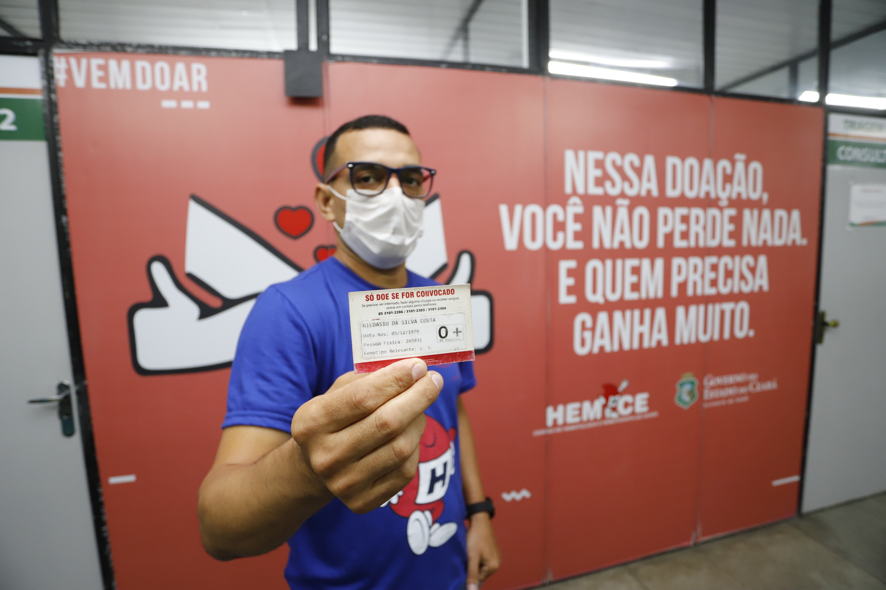

Maria Aparecida Soltero
“Minha terceira gestação foi de alto risco, eu tive uma gravidez de gêmeos, mas no início meu organismo absorveu um dos embriões. Depois, uma das placentas que não foi absorvida, ficou próximo da bexiga, fora do útero, e continuou crescendo. Desde o início da gestação eu sabia que seria uma situação difícil, que precisaria me preparar”

Alanna Atene Oliveria
“Fiquei muito abalada com toda a situação e foi minha primeira vez como receptora. Mobilizamos muitas pessoas e deu certo, no oitavo mês e 3 dias eu fiz a cirurgia e retirei o bebê. Tive uma hemorragia séria e após a cirurgia, fui para UTI”

João Almeida Flores da Silva
“Sofri um acidente em 1987, passei um ano internado em um hospital de Teresina, no Piauí, e lá vi um amigo de quarto falecer por falta de sangue. Um ano depois disso, assim que me recuperei, comecei a doar sangue fielmente. Minha primeira doação foi em 16 de agosto de 1988 e de lá para cá nunca mais parei. Quero chegar aos 70 anos doando sangue e salvando muitas vidas”,